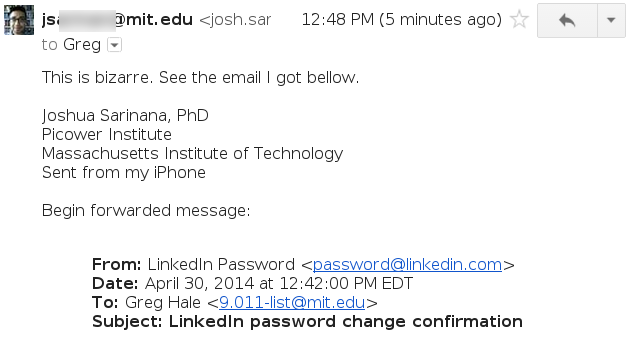

CORRECTION: I did link my account with the mailing list address, through a funny mechanism it turns out. This incident is entirely my fault. But, I stand by the claim that LinkedIn is evil (see the NYTimes article on their mail-scanning iPhone app), and I will still delete my account.
I just reset my LinkedIn password, and they e-mailed all of my classmates about it. Why? Because the site confused a mailing list I’m subscribed to for my e-mail address. …wat?

LinkedIn will scrape your e-mails, and they will screw up with security. Isolated mistake? No - they really just don’t find security very interesting.
This New York Times article pretty much sums up their philosophy. They want you to click the ‘Cool Feature’ button, which quietly lets them keep a copy of all your e-mail on their servers. To, you know… help you network.
I’m cancelling my LinkedIn account today. If you want to see what I’m working on, follow me on facebook, google plus, or github . These companies (github excluded) also have conflicting interests on privacy, but at least they get the damn technology right! I will just have to live without my “verified Microsoft Word” badge. Think I’ll survive. :)